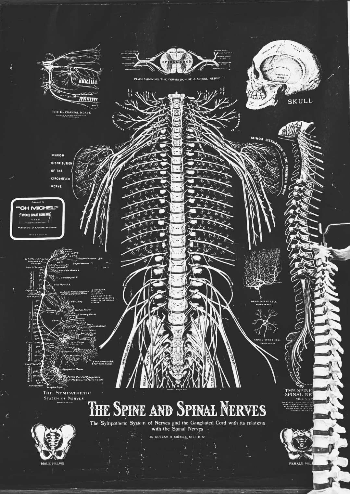
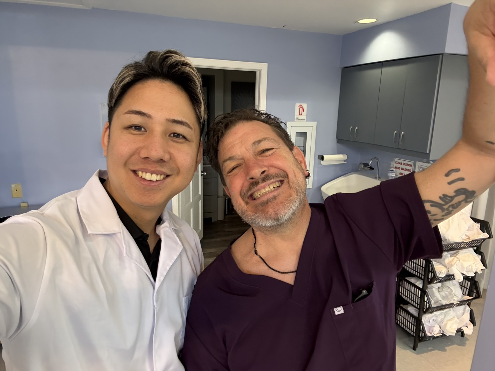
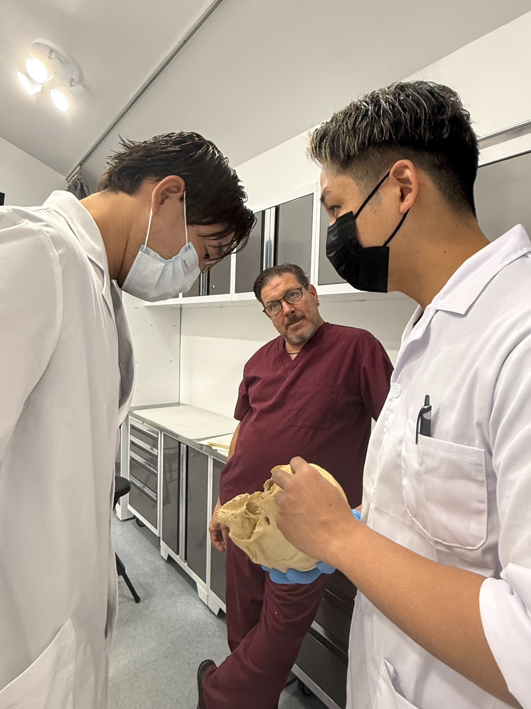

オリエンテーション・ZERO RECOVERY概論
- ZERO RECOVERYの目的と考え方
- 一般的なリラクゼーションとの違い
- 疲労が抜けにくい身体に起こっていること
- 筋肉、関節、呼吸、循環、神経のつながり
- 局所ではなく全身を施術する理由
- 強く押すことと疲労が抜けることの違い
- 2日間で習得する施術の全体像
- ヘッドコンディショニングとのつながり
頭部から足部まで。
分断された技術を
一つの施術へ。
按圧、軽擦法、散らし、揺らし、部位別ストレッチ、関節調整、ヘッドコンディショニングを統合する2日間。
第1期生募集｜限定12名
足りなかったのは、技術の数ではない。
学んだ技術を、評価に基づいて
一つにつなぐ設計だった。
疲労は、単一の筋肉の緊張だけで起こるものではありません。
筋緊張、関節の可動性、姿勢、重心、呼吸、循環、神経系の緊張、感覚入力、睡眠、仕事、運動、移動、精神的な緊張、生活背景など、複合的な要素が関係しています。
そのため、疲労を感じる部位だけを押すのではなく、頭部から足部まで全体を評価する必要があります。
技術の数が増えても
施術が深くなるとは限らない。
必要なのは
目の前の身体を見て
技術を選び
一つの流れへつなぐ力。
ZERO RECOVERYで学ぶのは
手技の寄せ集めではない。
評価から仕上げまでを設計する
統合の技術である。
※「ヘッドコンディショニング-極-」で学んだ技術を、全身施術の中に組み込む実践パートです。
60〜90分の全身施術を想定し、評価から仕上げまで実施します。
基本施術フロー：

零式 -ZERO- Founder
TOTAL BODY FITNESS THEORY 代表
パーソナルトレーナー兼整体師として12年以上のキャリアを持ち、一般の方からプロアスリートまで幅広い層の身体を担当。
施術、パーソナルトレーニング、企業研修、国内外での講師活動を展開する。
身体を筋肉や関節などの部位だけで捉えるのではなく、構造、機能、神経、感覚入力、運動出力、生活背景まで含め、一人の身体として考えることを大切にしている。
ZERO RECOVERYでは、これまでに学び、現場で使用してきた複数の技術を、全身疲労に対応する一つの施術体系として伝える。
僕自身、これまでに多額の費用と時間を投資し、国内外でさまざまな技術や知識を学んできました。
しかし、その中には現場ですぐに活かせないものや、安全性の欠如に不安を感じるものも多くありました。
本気で身体を学ぶ人が、良質な知識と技術を仕入れやすい環境を作りたい。
学んだだけで終わらず、明日の現場で確実に使える技術として持ち帰ってほしい。
この強い想いから
零 -ZERO-を立ち上げました。
本気で身体に向き合う
覚悟のある方をお待ちしています。
生きた身体の「真実」を知るために。
人体解剖実習を重ね、教科書や二次元の図だけでは分からない、三次元的な構造と機能の本質を追求し続けています。




首や頭部まで安全に扱う専門講座として設けている受講基準です。
「ヘッドコンディショニング-極-」の詳細はこちら
ZERO RECOVERYは、第1期終了後のフィードバックや実践事例を反映し、講座内容と実技指導体制をさらに整えていきます。
そのため、第1期は限定価格で募集します。
第2期以降は通常275,000円（税込）を予定しています。
ZERO RECOVERYでは、技術の定着と施術精度の向上を目的に、修了者向けの再受講制度を設けています。
一般受講者は、その期の通常価格の50％。
ZERO MEMBERSは、その期のMEMBERS価格の50％で再受講できます。
【第1期価格を基準とした再受講】
【第2期以降の予定価格を基準とした再受講】
技術を増やすだけでは
施術は完成しない。
目の前の身体を見て
必要なものを選び
一つの流れへつなぐ。
頭部から足部まで。
疲労を部分ではなく
一人の身体として見る。
すべてを統合し
身体を、零へ。
第1期生募集
定員12名